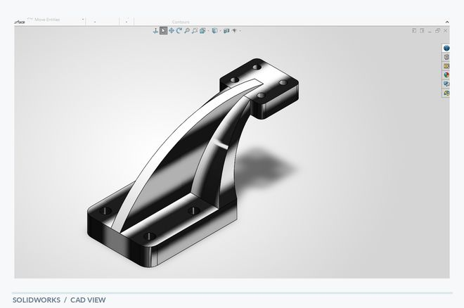
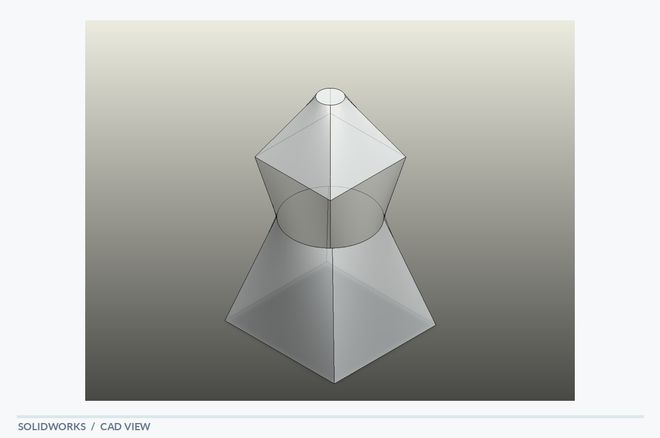
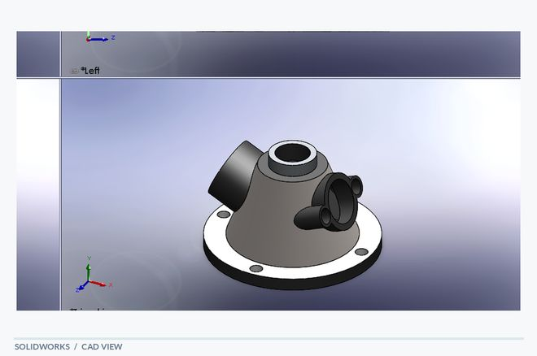
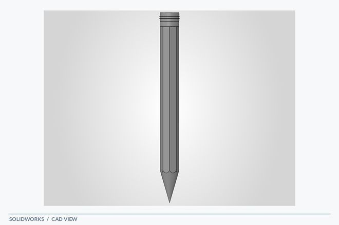
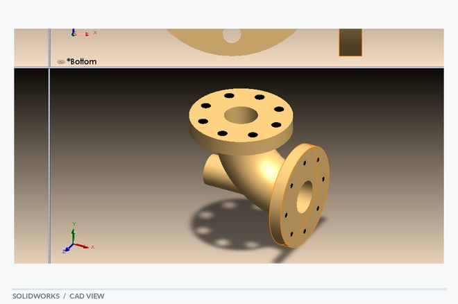
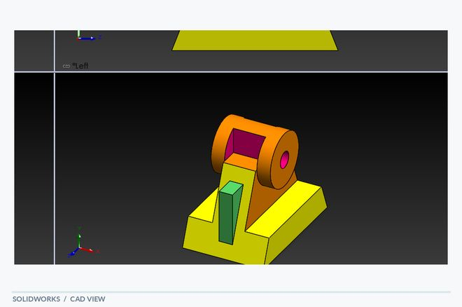
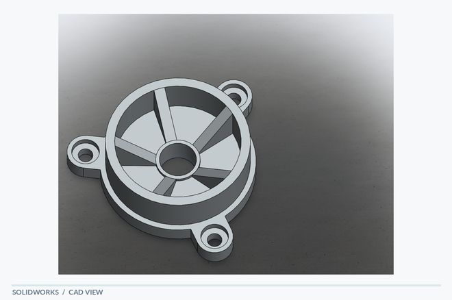
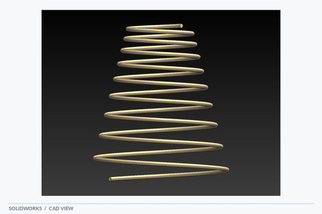
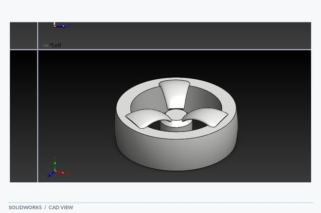

Selected CAD studies
Alphabetically organized — using the original component names.

Cantilever Bracket
A rib-reinforced cantilever bracket with a broad base and an elevated mounting interface.
Explore project →
Loft
A symmetric loft study linking tapered polygonal sections through a cylindrical center.
Explore project →
Multi-Port Valve
A multi-port valve body concept with a tapered main housing, inclined side connections and a mounting flange.
Explore project →
Pencil
A slender pencil model combining a faceted main body with a tapered writing tip.
Explore project →
Pump Housing
A flanged pump-housing concept built around cylindrical passages and a side connection.
Explore project →
Shaft Support Bracket
A raised shaft-support bracket with a cylindrical upper feature and a wider base.
Explore project →
Spoked Wheel Housing
A spoked wheel-style housing with a ring, central hub and mounting lugs.
Explore project →
Spring
A tapered helical spring model with a gradually varying coil diameter.
Explore project →
Wheel
A wheel-like rotational component with a circular rim and three internal radial elements.
Explore project →